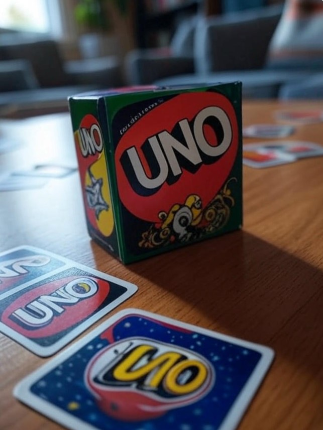

Welcome to the UNO World!
UNO is a popular card game invented in 1971 by Merle Robbins. It is now owned by Mattel and enjoyed by millions worldwide. The game is simple yet strategic, perfect for players of all ages. This website will guide you through the rules, strategies, and some fun facts about UNO.
For more information, visit the beano website.